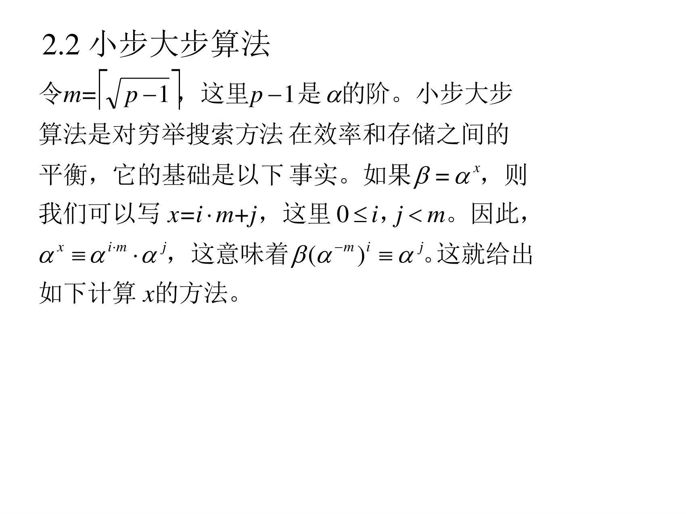
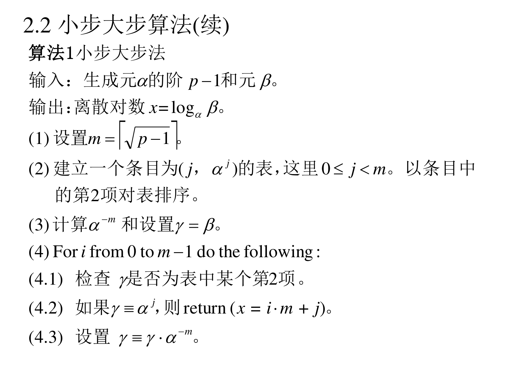
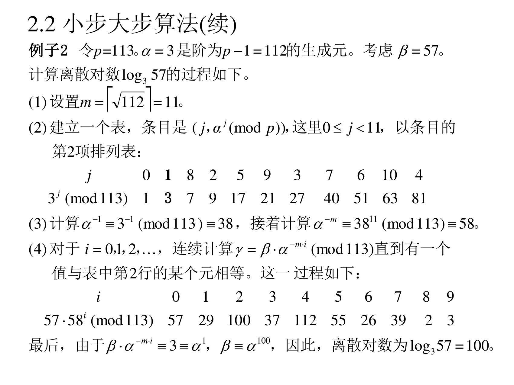

6.2.2 小步大步算法（BSGS，Baby-Step Giant-Step）
6.2.2.1 算法思想：把一个大问题劈成两个小问题
（PPT 第 8 页）
令 m=⌈p−1⌉，这里 p−1 是 α 的阶。小步大步算法是对穷举搜索方法在效率和存储之间的平衡，它的基础是以下事实。如果 β=αx，则我们可以写 x=i⋅m+j，这里 0≤i,j<m。因此，
αx=αi⋅m+j=αj⋅(αm)i=β,这意味着 (α−m)i⋅β=αj
这就给出如下计算 x 的方法。

翻译成人话（这一步是整个算法的灵魂）：
- 任何一个小于 m2 的数 x，都能写成 x=im+j（就像十进制里 x=10i+j，这里把"10"换成 m）。因为 m=⌈p−1⌉，所以 x<p−1<m2 一定写得出，而且 i,j 都小于 m。
- 于是 αx=αim+j=αj⋅αim。
- 把 αim 移项（乘它的逆元）：(α−m)i⋅β=αj。
关键：α−m 是常数（先算一次就行），所以我们可以：
- 先枚举所有 j，把 αj 全部算出来建成一张表 → 这一步叫人畜无害的"小步"；
- 再逐个 i 算 (α−m)iβ，去表里查 → 这步是"大步"。
两边相遇（(i,j) 都试到）就得到 x=im+j。
6.2.2.2 算法 1
（PPT 第 9 页）

算法 1（小步大步法）
输入：生成元 α 的阶 p−1 和元 β。
输出：离散对数 x=logαβ。
(1) 设置 m=⌈p−1⌉。
(2) 建立一个条目为 (j,αj) 的表，这里 0≤j<m。以条目中的第 2 项对表排序。
(3) 计算 α−m 和设置 γ=β。
(4) For i from 0 to m−1 do the following:
(4.1) 检查 γ 是否为表中某个第 2 项。
(4.2) 如果 γ=αj，则 return (x=i⋅m+j)。
(4.3) 设置 γ=γ⋅α−m。
翻译成人话：第 (2) 步"以第 2 项排序"是为了第 (4.1) 步能二分查找（O(lgm) 而不是 O(m)）。这是算法工程上的常规操作。
6.2.2.3 复杂度分析
（PPT 第 10 页）
算法 1 需要存储 O(p−1) 个群元。表需要 O(p−1) 次乘法来建立和 O(p−1lgp−1) 次比较来排序。建立这个表以后，步骤 (4) 需要 O(p−1) 次乘法和 O(p−1) 次查表完成算法。假定一次乘法需要的时间远多于 lgp−1 次比较需要的时间，那么我们可以得出算法 1 需要的运行时间的明确结论，也就是小步大步算法需要 O(p−1) 次乘法。
翻译成人话：总工作量 = 建表 p 次 + 查找 p 次 ≈ 2p 次乘法（排序那部分是"比较"，比乘法便宜得多）。时间和存储都是 p 量级。
6.2.2.4 例子 2（完整手算）
（PPT 第 11 页）

例子 2：令 p=113，α=3 是阶为 p−1=112 的生成元。考虑 β=57。计算离散对数 log357 的过程如下。
(1) 设置 m=⌈112⌉=11。
(2) 建立表，条目是 (j,αjmodp)，0≤j<11，以第 2 项排序：
| j |
0 |
1 |
8 |
2 |
5 |
9 |
3 |
7 |
6 |
10 |
4 |
| 3jmod113 |
1 |
3 |
7 |
9 |
17 |
21 |
27 |
40 |
51 |
63 |
81 |
(3) 计算 α−1≡3−1≡38(mod113)，接着计算 α−m≡3811≡58(mod113)。
(4) 对于 i=0,1,2,…，连续计算 γ=β⋅α−mi(mod113)，直到有一个值与表中第 2 行的某个元相等。过程如下：
| i |
0 |
1 |
2 |
3 |
4 |
5 |
6 |
7 |
8 |
9 |
| 57⋅58imod113 |
57 |
29 |
100 |
37 |
112 |
55 |
26 |
39 |
2 |
3 |
最后，由于 β⋅α−mi=3≡α1，β≡α100，因此离散对数为 log357=100。
手把手复现一遍（每一步都算出数字，你可以拿计算器对）：
- 定 m：112 开平方是 10.58，向上取整得 m=11。
- 小步（建表）：算 3jmod113：
- 30=1、31=3、32=9、33=27、34=81、35=243mod113=17、36=51、37=153mod113=40、38=120mod113=7、39=21、310=63。
- 排序后就是上表：值 1,3,7,9,17,21,27,40,51,63,81，对应的 j 分别是 0,1,8,2,5,9,3,7,6,10,4。
- 算常数：α−1=38（因为 3×38=114≡1(mod113)），α−m=3811mod113=58。
- 大步（查表）：从 γ=57 出发，每次乘 58：
- i=0：57 —— 表里没有
- i=1：57×58=3306；3306−29×113=3306−3277=29 —— 没有
- i=2：29×58=1682；1682−14×113=100 —— 没有
- i=3：100×58=5800；5800−51×113=37 —— 没有
- i=4：37×58=2146；2146−18×113=112 —— 没有
- i=5：112×58=6496；6496−57×113=55 —— 没有
- i=6：55×58=3190；3190−28×113=26 —— 没有
- i=7：26×58=1508；1508−13×113=39 —— 没有
- i=8：39×58=2262；2262−20×113=2 —— 没有
- i=9：2×58=116；116−113=3 —— 命中！表里 3 对应 j=1
- 拼答案：x=i⋅m+j=9×11+1=100。
- 验证：3100mod113=57 ✔（与 β=57 一致）。
感受一下工作量：穷举要试到 x=100，这里只做了 11 次建表 + 10 次查表 = 21 次乘法。